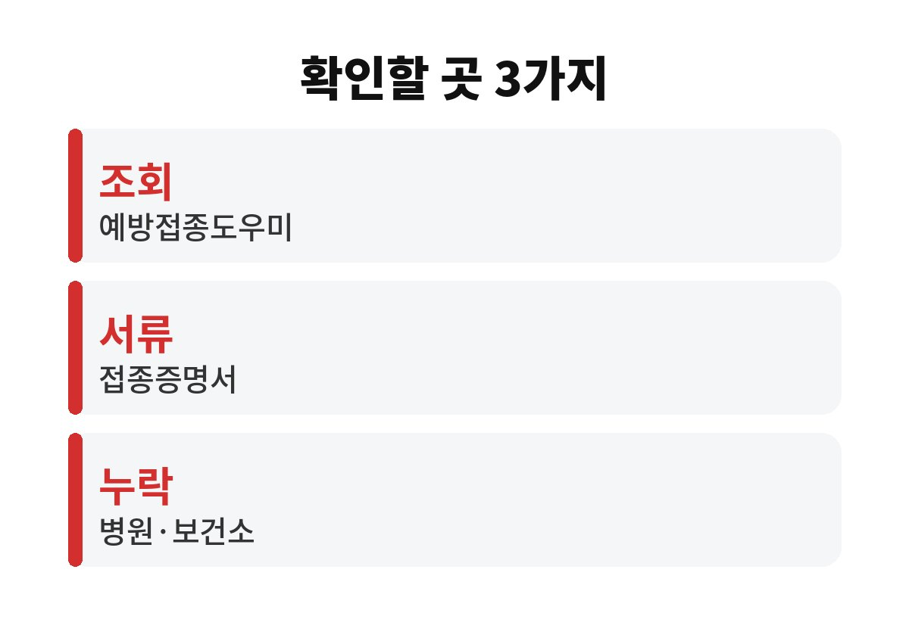
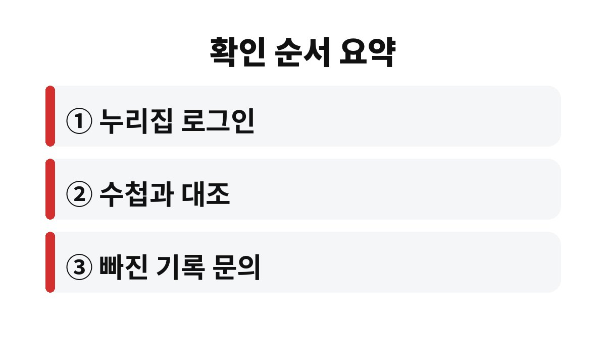

아이 예방접종 내역 확인은 질병관리청 예방접종도우미 누리집에서 본인 인증 후 조회하면 되고, 기록이 비어 있으면 접종을 한 병원이나 보건소에 문의하는 것이 가장 빠르다.
수첩을 잃어버렸거나 병원을 여러 곳 옮겨 다녔어도 전산 기록이 남아 있는 경우가 많다.
기록이 어디에 있고 어디가 비어 있는지부터 차분히 가려내는 순서를 적는다.
어린이집이나 유치원, 초등학교에 보낼 때는 예방접종을 마쳤는지 확인하는 절차가 따른다.
안내문에 접종 확인이라는 말이 적혀 있으면 수첩을 찾기 전에 전산 기록부터 열어 보는 편이 빠르다.
저녁에 서랍을 다 뒤져도 수첩이 나오지 않던 부모라면 이 방법이 훨씬 덜 피곤하다.
소아과를 두세 곳 옮기면 종이 수첩의 기록은 군데군데 끊긴다.
전산 기록은 접종한 의료기관이 입력하므로 한곳에서 모아 볼 수 있다.
접종 기록은 아이가 자라는 동안 여러 번 쓰인다.
예를 들어 학원이나 캠프에서 접종 여부를 물을 때, 해외 이동 전 병원에서 이력을 물을 때도 같은 기록이 필요하다.
그때마다 수첩을 찾느라 시간을 쓰기보다 한 번 정리해 두면 편하다.
보건소에서도 접종 기록을 확인해 주는 경우가 있어, 온라인 인증이 번거로운 부모는 신분증을 들고 방문해도 된다.
방문 전에 전화로 필요한 서류를 한 번 물어보면 헛걸음을 줄일 수 있다.
아이와 함께 가야 하는지는 보건소마다 안내가 다를 수 있다.
같은 접종 기록이라도 목적에 따라 열어야 할 곳이 다르다.
아래 표에서 지금 내 상황에 맞는 줄만 보면 된다.
표의 마지막 줄처럼 다음 접종 시기를 묻는 경우에는 누리집 기록보다 의사 판단이 앞선다.
아이가 감기나 열이 있던 시기에 접종을 미뤘다면 일정이 표준 시기와 다를 수 있다.
그럴 때는 기록 화면을 캡처해 병원에 가져가 지금 어디까지 맞았는지 같이 본다.
| 상황 | 확인할 곳 | 메모 |
|---|---|---|
| 어떤 접종을 했는지 보고 싶다 | 예방접종도우미 누리집 조회 | 본인 인증 필요 |
| 어린이집·학교에 서류로 내야 한다 | 접종증명서 발급 | 누리집이나 보건소 |
| 수첩에는 있는데 전산에 없다 | 접종한 병원·보건소 문의 | 기록 등록 요청 |
| 다음 접종 시기가 헷갈린다 | 소아청소년과·보건소 상담 | 아이 상태에 따라 다름 |

접종 기록 확인은 한 번 해 두면 입학 전 서류 준비, 병원 방문, 학원 등록 때마다 같은 자료를 다시 쓸 수 있다.
발급한 증명서의 날짜와 파일 이름을 아이 이름과 연도로 저장해 두면 나중에 찾기 쉽다.
휴대폰 사진첩보다 따로 만든 폴더가 낫다.
조회 화면에서는 백신 이름이 줄임말이나 영문 표기로 나올 수 있다.
낯선 이름이 보이면 수첩의 같은 날짜 칸과 맞춰 본다.
날짜가 하루 이틀 다르게 적혀 있는 경우도 있어, 이때는 접종한 병원에 어느 쪽이 맞는지 묻는다.

화면 구성과 메뉴 이름은 개편될 수 있으므로, 안내가 달라 보이면 누리집 도움말을 따른다.
화면에 기록이 없다고 해서 접종을 안 했다고 단정하면 안 된다.
병원이 기록을 늦게 올렸거나 입력이 빠졌을 가능성이 있다.
수첩에 날짜와 도장이 남아 있다면 사진을 찍어 접종한 병원에 가져가 전산 등록을 부탁하면 된다.
병원이 문을 닫았다면 관할 보건소에 물어보는 길이 있다.
반대로 기록이 없다는 이유로 같은 백신을 서둘러 다시 맞히는 일은 하지 않는다.
추가 접종이 필요한지는 의사가 판단할 일이다.
기록을 찾는 일이 번거롭다고 느껴지면 증명서를 발급한 김에 사진으로 찍어 휴대폰에 따로 저장해 둔다.
다음 접종 날짜가 다가오면 그 사진을 병원에 보여 주면 된다.
전산 기록은 보호자 본인 인증으로 열리는 개인정보다.
공용 컴퓨터에서 열었다면 로그아웃을 하고, 발급한 증명서 파일은 필요한 곳에만 제출한다.
어린이집 앱에 사진으로 올릴 때도 주민등록번호 뒷자리가 보이지 않는지 한 번 확인한다.
접종을 한 병원의 이름이 기억나지 않으면 수첩 표지나 영수증, 카드 결제 내역에서 날짜 근처의 병원 이름을 먼저 찾아본다.
조회 한 번으로 끝나는 집도 있고 병원에 전화를 두세 번 해야 끝나는 집도 있다.
이번 주에 할 일은 아이 접종 내역을 한 번 열어 수첩과 대조해 보는 것 하나다.
빠진 칸이 보이면 그 접종을 한 병원에 전화로 묻는 것부터 시작하면 된다.
참고 자료: 질병관리청 「예방접종도우미 누리집」(2026년 11월 확인)
※ 2026년 기준 공식 자료를 바탕으로 정리한 일반 정보이며, 아이의 발달이나 건강에 걱정이 있다면 소아청소년과 등 전문가와 상담하길 바란다.